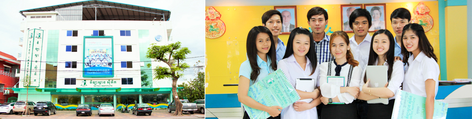
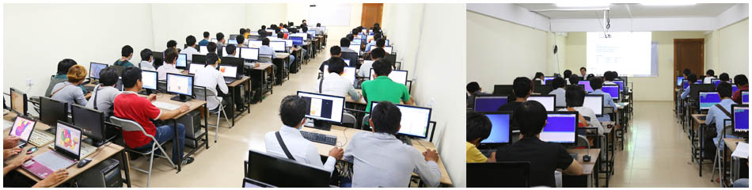
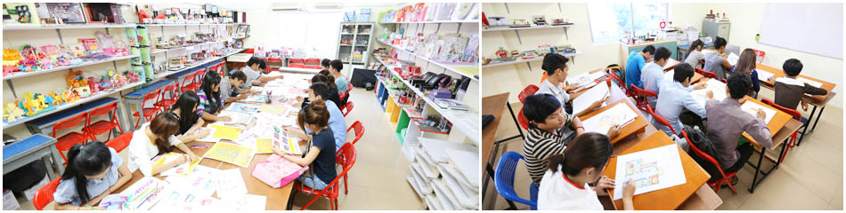

វិទ្យាស្ថានស៊ីតិក |
ទំនាក់ទំនង |
កម្មវិធីសិក្សា |
កម្មសិក្សា |
សម្ភារបរិក្ខា |
អំពីវិទ្យាស្ថាន |
រចនាសម្ព័ន្ធ |
សិស្ស |
មុខវិជ្ចា





បន្ទប់ទ្រឹស្តី, បន្ទប់កុំព្យូទ័រ, បន្ទប់រចនាម៉ូដ, បន្ទប់ IT, បណ្ណាល័យ, អាហារដ្ឋាន, ចំណត ។
បន្ទប់ទ្រឹស្តី
ជាបន្ទប់បង្រៀនត្រូវបានបំពាក់ជាមួយនឹងម៉ាស៊ីនត្រជាក់, បញ្ចាំងអេក្រង់ LCD ក្នុងការផ្តល់
នូវជំនួយការរៀនសូត្រដ៏ល្អបំផុតដែលនិស្សិតត្រូវការជាចាំបាច់។ កុំព្យូទ័រនៅក្នុងការបង្រៀនដែល
ត្រូវបានតភ្ជាប់ទៅអ៊ីនធឺណិតផងដែរនិងបណ្តាញសម្រាប់រៀនសូត្រមានប្រសិទ្ធិភាពបំផុត។
បន្ទប់កុំព្យូទ័រ របស់យើងត្រូវបានបំពាក់ដោយម៉ាស៊ីនត្រជាក់ដើម្បីផ្តល់នូវបរិយាកាសសិក្សារបស់សិស្សមួយ មានផាសុខភាពនិងទូលាយ។កុំព្យូទ័រទាំងអស់ត្រូវបានបំពាក់ដោយបច្ចេកវិទ្យាកុំព្យូទ័រចុងក្រោយដើម្បីផ្តល់ អោយនិស្សិតរបស់យើងជាមួយនឹងជំនួយបណ្តុះបណ្តាលល្អបំផុត។
បន្ទប់រចនាម៉ូដ ត្រូវបានបំពាក់ជាមួយឧបករណ៍ប្រពៃណីនិងសម័យទំនើបជាច្រើនហើយមានលក្ខណៈផ្សេងៗ គ្នានៅក្នុងបន្ទប់ផ្សេងគ្នាសម្រាប់និស្សិតគោលបំណងរៀន និងគំនិតបង្កើតថ្មី។
បន្ទប់ IT សិស្សនិស្សិតដែលមានចំណាប់អារម្មណ៍ក្នុងការរៀនបន្ថែមទៀតលើការជួសជុលនិងបណ្តាញ ពួកគេអាចអនុវត្តន៍បាននៅក្នុងបន្ទប់ IT នៅបន្ទាប់ពីម៉ោងរៀននៅសាលា។ យើងផ្ដល់សេវាជួសជុល ដោយឥតគិតថ្លៃ (មិនរួមបញ្ចូលគ្រឿងបន្លាស់) ដល់សិស្សនិស្សិតទាំងអស់។
បណ្ណាល័យ របស់យើងផ្តល់ដល់សិស្សនូវបរិយាកាសមានផាសុខភាពនិងត្រជាក់ជាមួយនឹងសៀវភៅនិងទស្សនា វដ្តីចំនួនប្រហែល ៥០០០ក្បាល។ សៀវភៅទាំងនេះត្រូវបានទិញពីខាងក្រៅប្រទេសសិង្ហបុរី ថៃ សហរដ្ឋអាមេរិក និងប្រទេសអូស្ត្រាលី។ ជាមួយបច្ចេកវិទ្យាទំនើបអ៊ីមែលសៀវភៅ-ក៏អាចរកបានសម្រាប់សិស្ស។
***វិទ្យាស្ថានផ្តល់នូវការប្រើប្រាស់ប្រព័ន្ធ Wifi ដោយមិនគិតថ្លៃផងដែរ.
អាហារដ្ឋាន យើងមានអាហារដ្ឋានមួយនៅផ្នែកខាងលើដំបូលសម្រាប់ សាស្ដ្រាចារ្យ បុគ្គលិក និងសិស្សនិស្សិត។ បរិស្ថានស្អាតនិងអាហារឆ្ងាញ់ពិសារព្រមទាំងមានតំលៃសមរម្យ។
ចំណត យើងមានបន្ទប់ក្រោមដីសំរាប់ចតរថយន្ត ម៉ូតូ និងកង់ដែលអាចផ្តល់លក្ខណៈងាយស្រួលដល់និស្សិតរាប់ពាន់នាក់សំរាប់រក្សាយាន្តជំនិះ។